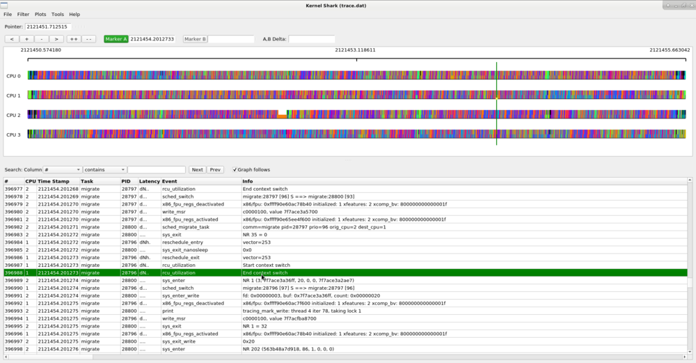
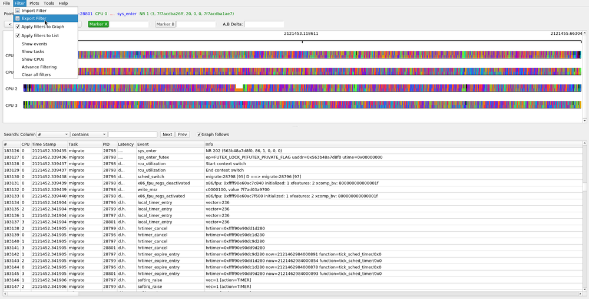
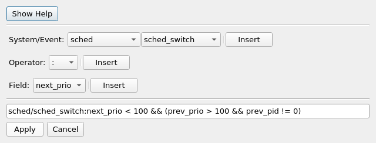
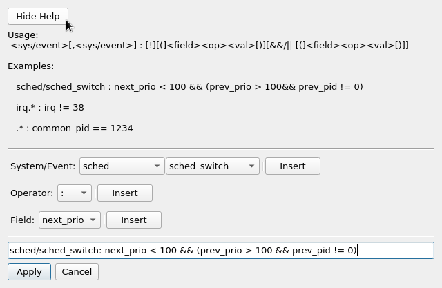

KernelShark is a front end reader of trace-cmd(1) output. "trace-cmd record" and "trace-cmd extract" create a trace.dat (trace-cmd.dat(5)) file. kernelshark can read this file and produce a graph and list view of its data.

The application has two main viewing areas split by a paned divider. The top half is a graphical display of the data and the bottom half is a list view of each event. Underneath the menu bar is the graph information area:

The graph information line displays the timestamp of the time that the pointer is located at (or last located at when off the graph area). It then shows the information of the event that the pointer is over, which holds the same infomation of the event in the list view.

The line of below the graph info area holds the control buttons.
 moves the graph to the left
moves the graph to the left zooms the graph in
zooms the graph in zooms the graph out
zooms the graph out zooms the graph all the way in (to its farthest point)
zooms the graph all the way in (to its farthest point)The graph is broken into two parts, the plot title section:

and the plot area:

The plot area contains the data of the given plot, where plots can be per CPU or per task. The top of the plot area shows a timeline. The numbers in the timeline are seconds. The time in the timeline is taken from the timestamps within the trace.dat file which are architecture dependent. The time usually is the timestamp from when the system started.
Below the graph is the list area.

The list area starts with the search boxes (See Searching for Events), and the Graph follows toggle button
The graph view of kernelshark shows graphical plots of the data stored in the trace.dat file. The data plots are per CPU or per task. When there are too many events within the resolution of the graph, the plots will appear as a rainbow colored bar. To make more sense out of the graphs, you need to zoom into a given location to see the details of that time frame more clearly.
There's three ways of zooming it. One is to press and hold the plus button above the graph, or you can use the mouse. By scrolling the mouse wheel up, it will zoom in. Scolling the mouse wheel down will zoom out. The thrid way is to use the left mouse button to get a more precised area.
The left mouse method starts by click and holding the left mouse button and then dragging it to the right or left. The graph will then zoom in where the event at the start of the shaded area is the starting event in the graph view area and the event at the end of the shaded area is the last event in the graph view area.

The area that you selected will now become the new width of the viewable area. The smaller the selection, the deeper the zoom. You can continue zooming in until you get to the details you are looking for.

Zooming in further shows individual events and tasks that are scheduled on the CPU plots. The thick colored line on the plot represents a task is executing. The vertical lines that stick up represent individual events. When the CPU is idle (the idle task), there will will not be a thick colored line, but the idle task can still have events which are displayed.
To zoom back out, simply press and hold the minus button, scoll the mouse wheel down, or select the double minus button which will zoom completely out and display the full trace.
There are two markers that can be placed on the graph.
The highlighted marker is the "active marker", and its button is highlighted (as "Marker A" is in the diagram below). By clicking the Marker A button (which is set by default), you can place a static marker on the graph. After clicking the Marker A button, simply double click on the graph and a nearby event to where you clicked will be highlighted by a vertical line that spans the full graph window. The timestamp of that event will display after the Marker A button in its information window.
The list view will also select the event that was selected by the graph.

To set Marker B, click on the Marker B button, and then double click on the event in the graph area that you want Marker B to be attached to.
The list view will also select that event with a separate selection than from Marker A. That is, you can see two selections in the list, each representing one of the graph markers.

When both the A and B markers are set, the graph control area will show the timestamp of where the A and B markers are, as well as the difference between the two. All timestamps are in seconds, with a resolution of 1/10 of a microsecond.
You can deselect a marker by right clicking the graph or list area and select "Deselect".
The graph data is represented by plots. The data on the plots are either CPU specific or task specific. If they are CPU specific, then the data holds the timeline of events that happened on a given CPU (which CPU is shown in the plot title area). If the plot is task specific, then the timeline of events are for the given task regardless of what CPU it was on at the time. The task name is also shown in the plot title area.
By default, all the CPUs within the loaded trace.dat file are plotted. There are two ways to plot a task. One way is to right mouse click over an event of a displayed task in the graph or list and select the "Add [task] plot" option. The other way is to use the Plots menu.

Selecting the "Tasks" menu item will bring up a dialog with all the tasks that were found in the trace data. Clicking on the check box will toggle the selection of the given task. To select multiple tasks at once, highlight the tasks you want to select, then hit the "Enter" key. When you are satisfied with the tasks you wish to plot, hit "Apply".
Note, in order to process the tasks, a linear search is made to find all the task's events at the creation of a task plot. This may take a bit of time on large data sets. But after the events have been found, they are stored in a data store and the processing of the graph will go back to normal speeds.

Selecting a task in this dialog will add the task plot to the bottom of the graph area. Unselecting a task in this dialog will remove the plot.

The CPU plots change colors as different tasks run on the CPU, and the task plots change color depending on what CPU the task is running on. This makes it easy to see how much a task bounces around the CPUs. Zooming in on a task plot also shows some more characteristics of the task.

The hollow green bar that is shown in front of some events in the task plot represents when the task was woken up from a sleeping state to when it actually ran. The hollow red bar between some events shows that the task was preempted by another task even though that task was still runnable.
Since the hollow green bar shows the wake up latency of the task, the A,B markers can be used to measure that time.

The above shows that the "migrate" task with PID 28797 had a 14 microsecond wake up latency. The same can be done with the preemption latency.

Selecting the "CPUs" plot menu item pops up a dialog that shows the available CPUs that can be plotted.

Removing a selected CPU and hitting "Apply" will remove that CPU plot.


The list view is in the bottom half paned window and can be expanded or shortened with the paned handle.

The top of the list view contains the list area which has the list search and "graph follows" toggle button.
The columns of the list are:
Note: These may be different depending on the kernel the trace.dat file came from.
The list search can find an event based on the contents in a row. Select a column, a match criteria and the content to match to find the next row that matches the search. The match criterion is one of the following:
The search will find the next event that has the matching data within the column.
A single click on a row will select that row. If the Graph follows button is selected (which it is by default), the selected marker will move to the event matching that row. If the Graph follows is not selected, then the graph will not change.
When the "graph follows" toggle is set, then selecting a row in the list view will cause the graph to move the active marker (either A or B) to the event that corresponds to the event in the selected row. With the mouse focus on the list, using the keyboard up and down arrow keys will move the selection of the list as well as the graph cursor.
Notice that there is a small square dot on the event within the marker that shows where the event is in the Graph that is selected in the List view.
The amount of data that can be stored in a trace.dat file can be enormous. To make any sense out of some traces, it may be required to only display various events. The same can be true about tasks. Kernelshark has filters for tasks as well as for events.
The Filter menu on the toolbar consists of:
On start up of KernelShark, the filters, by default, will be applied to both the Graph and List areas. You can modify this by selecting the "Filter" menu from the tool bark and uncheck the checkboxes next to "Apply filters to Graph" or "Apply filters to List". This will not affect the filters themselves, but will affect if the filters are applied to the Graph or List areas.
The vertial lines that stick up from the task and CPU plots represent events. These can be filtered via the Event Filter dialog.

Selecting the all checkbox will select all events and nothing will be filtered. Deselecting the all checkbox will deselect all events. The same is with the system checkboxes (the top level ones). Expanding the system tree will show the individual events in the system, which can be selected.

If only a subset of the tasks are of interest in either the Graph or List view, then they can also be filtered. Select the Show tasks menu option the Filter menu of the toolbar and the Task Filter dialog will pop up.

This will "hide" all other tasks except for what was selected in the dialog. Again, the all checkbox will select all tasks if selected, and will unselect all tasks when it is unselected.

Filtering on events may not be enough. The ability to filter on the content of individual events may be needed. In order to accomplish this, the advanced event filtering is used. Selecting Advance Filtering from the Filter menu will pop up the advanced event filtering dialog.
Selecting Show Help displays the syntext of the filter format, and the helper buttons can be used to find events and their corresponding fields.

Spaces are ignored. The example used in the dialog figure:
sched/sched_switch : next_prio < 100 && (prev_prio > 100 && prev_pid != 0)
The sched/ is not necessary because without it, the filter will process all events named sched_switch, and since there is only one event that has that name, including the sched/ is redundant.
The next_prio, prev_prio and prev_pid are all event fields of the sched_swich event.
If just sched was used and the /sched_switch was omitted, it would still be a valid filter, but it would behave differently. By just specifying a system, the filter will run on all events within that system. When a field is encountered that does not belong to an event, then that compare will be set to false.
sched : prev_pid != 0 sched : !(prev_pid == 0)
The above two filters are not equivalent. They are for the sched_switch event, but not for the other events. The first filter will return false for all events that do not contain the prev_pid field, but the second filter would return true for all events that do not contain that field. Again, if the event does not contain a field, just that compare will be evaluated to false, not the entire expression. This means for events that do not have the prev_pid field, the above filters would be equivalent to:
sched : FALSE sched : !(FALSE)
Letting filters contain fields that do not belong to an event be valid allows for various tricks where two events can share the same filter.
sched_switch, sched_wake.* : next_pid == 1 || pid == 1
The schedule events that have next_pid and not pid as a field will just compare the first part of the || and those events with pid but without next_pid will be compared against the second part of the ||
Notice that event names in the filter can be regular expressions.
String fields can have regular expressions used in their comparing if =~ or !~ are used.
sched_switch : next_comm =~ "^events/[23]$"
The available regular expressions are described in regex(7).
To remove an advanced filter, you can select the Clear all filters from the Filter toolbar menu. Or select Advance Filtering again and it will show all the current filters.

Selecting the Delete checkbox and hitting Apply will cause the selected advance filter to be removed.
Multiple advance filters will act as a union. That is, if any advance filter matches an event, then that event is kept in the events to display. But the simple filters (events, tasks, or CPUs) are then applied against them. For example, to display all ext4 events as well as the advanced filter of "sched_switch: next_prio <. 100 &.&. (prev_prio >. 100 &.&. prev_pid != 0)", selecting ext4 from the Filter->Show events that selects ext4 events, will not show any event. That's because no event will satisfy both being in the ext4 system and the sched. To handle both, you need to add "ext4" as an advance filter, and then both will be applied.

Note, when adding just a event system (i.e. ext4), all the events are added individually.

The state of KernelShark can be saved and restored via sessions. When exiting KernelShark normally (hitting the "x" or selecting Exit), the state that KernelShark was last in will be saved to disk. You can retrieve this last state by selecting from the toolbar File->Session->Restore Last Session. This will return you to the state that you were in when you last exited KernelShark. That is, the current zoom position, with Marker A and Marker B at their previous location, as well as any filters applied as they were when you last quit.
You may also save the current state at any time by selecting File->Session->Export Session and retrieve it at a later time with File->Session->Import Session